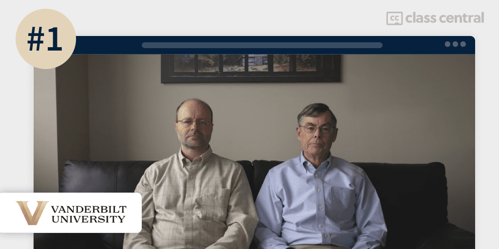
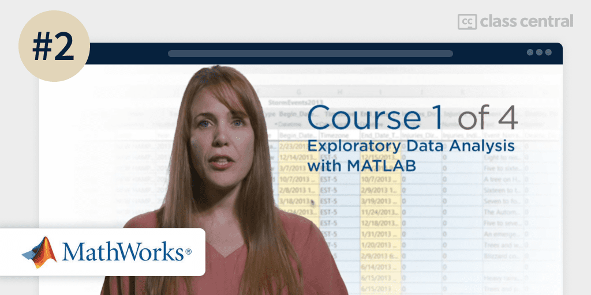
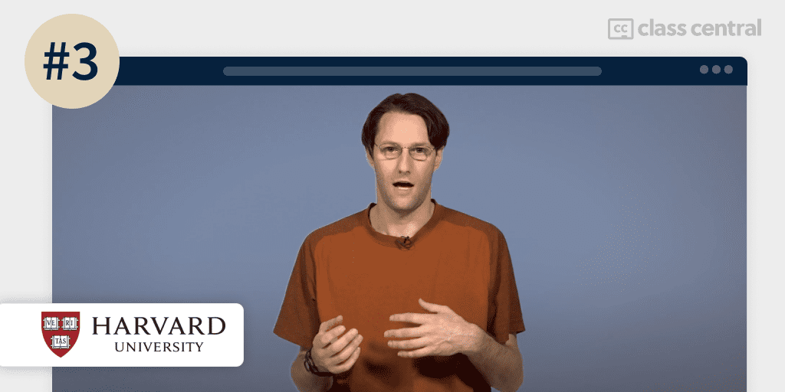
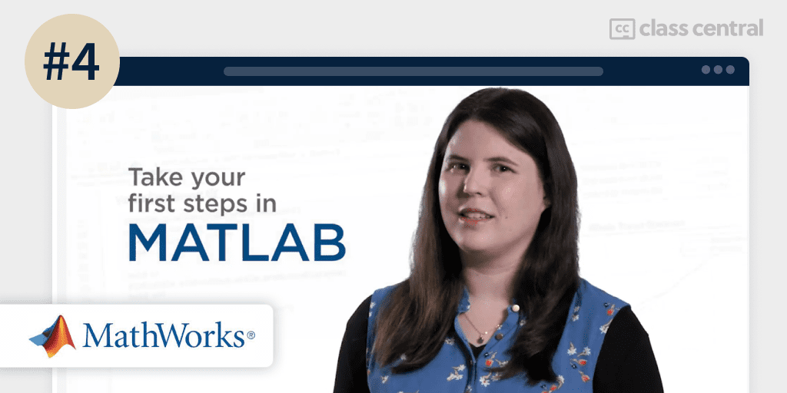
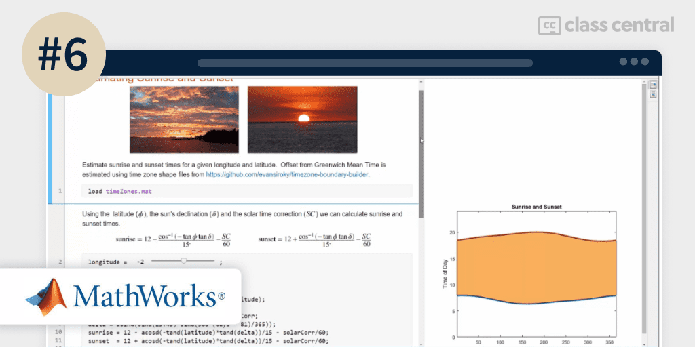
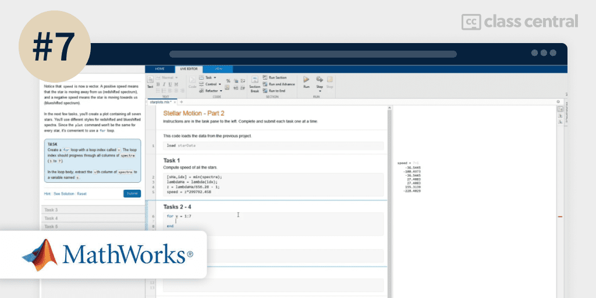
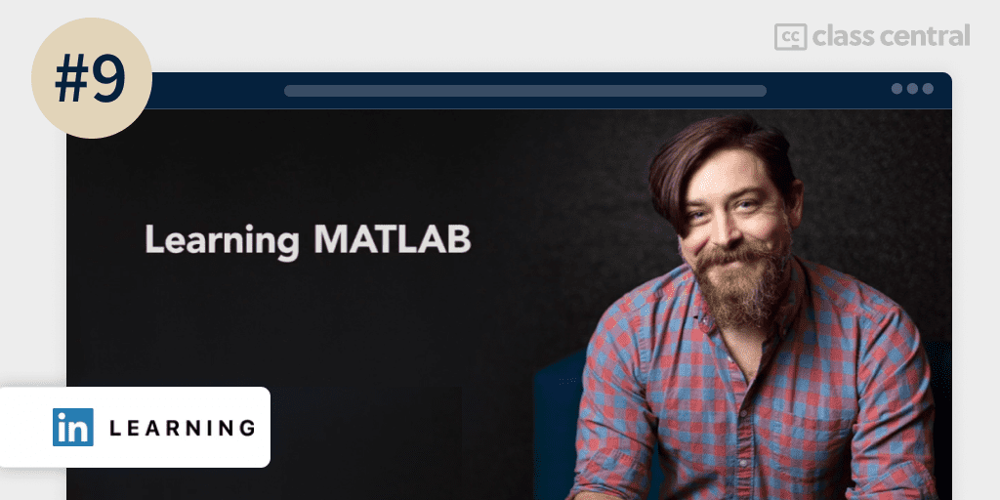
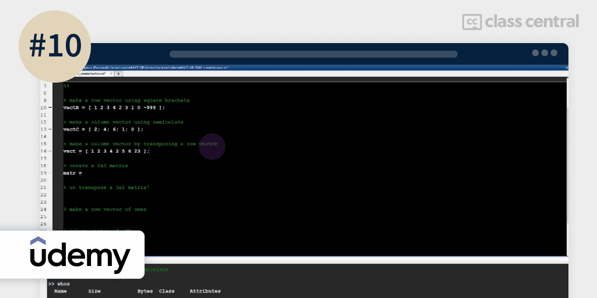

10 Best MATLAB Courses to Take in 2023
Here is a ranking with FREE and paid MATLAB courses, a scientific computing programming environment for algorithm development, data analysis, visualization, and numeric computation.
In this guide, I’ve selected the best free and paid online courses to learn MATLAB based on MATLAB courses from the Class Central catalog. Most of the courses are free or free-to-audit, and four courses are provided by MathWorks, the maker of MATLAB. There are great courses for even complete beginners but there are also options for more advanced users and for specific fields such as medicine, biology, and engineering.
Here are my top picks. Click on one to skip to the course details:
| Course | Workload | In Brief |
| 1. Introduction to Programming with MATLAB (Vanderbilt) | 27–36 hours long | Best for STEM oriented beginners to programming |
| 2. Exploratory Data Analysis with MATLAB (MathWorks) | 20 hours long | Best for data science oriented people |
| 3. Quantitative Methods for Biology (Harvard) | 30–50 hours long | Best for medicine or biology oriented people |
| 4. MATLAB Essentials (MathWorks) | 16–28 hours long | Best for general MATLAB programming |
| 5. Numerical Methods for Engineers (HKUST) | 42 hours long | Best for engineers |
| 6. MATLAB Onramp (MathWorks) | 2 hours long | Best concise introductory course to MATLAB |
| 7. MATLAB Fundamentals (MathWorks) | 17 hours long | Best for those with some MATLAB experience |
| 8. Introduction To MATLAB Programming (MIT) | 1–2 hours long | Old but gold MATLAB course |
| 9. Learning MATLAB (LinkedIn Learning) | 1–2 hours long | Best LinkedIn Learning course |
| 10. Master MATLAB through Guided Problem Solving (Udemy) | 38 hours long | Best for learning the ins and outs of MATLAB |
What is MATLAB?
MATLAB is a scientific computing programming environment for algorithm development, data analysis, visualization, and numeric computation. It is used among engineers, scientists, and academics as it allows analysts to work efficiently with large amounts of data.
The design of the language enables powerful but simple programs to be written and solve complex tasks. Often, MATLAB scripts are just a few lines long, while other high-efficiency programming languages like C++ or Java can take several pages of code, which is why MATLAB is one of the top 20 most popular programming languages in the world, according to the TIOBE Index. Additionally, Glassdoor states that MATLAB Engineers on average make $111K annually.

Best Courses Guides Methodology
I built this ranking following the now tried-and-tested methodology used in previous Best Courses Guides (you can find them all here). It involves a three-step process:
- Research: I started by leveraging Class Central’s database with 80K+ online courses and 170K reviews. Then, I made a preliminary selection of 100+ MATLAB courses by rating, reviews, and bookmarks.
- Evaluate: I read through reviews on Class Central, Reddit, and course providers to understand what other learners thought about each course and combined it with my own experience as a learner.
- Select: Well-made courses were picked if they presented valuable and engaging content and they have to fit in a set of criteria and be ranked accordingly: comprehensive curriculum, selling price, release date, ratings and enrollments.
Course Ranking Statistics
Here are some aggregate stats about the ranking:
- Together, the courses in this ranking account for 553,145 enrollments.
- The courses make up about 274 reviews at Class Central.
- Most of the courses are beginner level.
- 4 of the courses on this list are made by MathWorks, the company behind MATLAB itself.
- Around 2.3K people are following MATLAB Topic on Class Central.
Without further ado, let’s go through the top picks.
1. Introduction to Programming with MATLAB (Vanderbilt University)

My #1 pick for the best MATLAB course is Introduction to Programming with MATLAB by Vanderbilt University.
This free-to-audit course is targeted towards engineers or scientists with little to no coding experience who want to get started programming in MATLAB, either for school or work. By the end of the course, you’ll have a deep and comprehensive understanding of MATLAB and programming.
Students taking the course will get a MATLAB online license free of charge for the duration of the course.
What You’ll Learn
The course begins with an introduction to the MATLAB environment and user interface, where you’ll learn how to use MATLAB as a sophisticated calculator and how to create plots.
Then, you’ll learn how to work with the basic unit of MATLAB — the matrix. We solve problems by manipulating matrices, and operators are the primary means by which we manipulate them. You’ll learn how to define matrices, extract parts, combine them to form new matrices, and become familiar with how operators work in MATLAB. Afterward, you’ll learn how to create and use functions to break down problems into smaller, more manageable, and reusable parts.
The next section of the course deals with the many built-in functions in MATLAB. For example, you’ll learn about polymorphism, the MATLAB random number generator, how to get input and print to the Command Window, plot graphs in a Figure window, and use MATLAB’s debugger.
Then, you’ll learn about controlling the flow of a program with selections and loops which involves if-statement, for-loop, and while-loop.
MATLAB has 15 fundamental data types, and you will study them in this course section. The course describes the ten types of numbers and how to convert one type into another. You’ll learn much more about strings, how to produce heterogeneous collections of data via structs and cells, and storing points in time and time durations.
In the final part of the course, you’ll be introduced to MATLAB’s most important methods for reading and writing files — like MAT files, Excel files, text files, and binary files — and how to navigate through folders with MATLAB commands.
How You’ll Learn
The course is 9 weeks long with each week taking 3–4 hours of study. You’ll learn primarily from video lectures and working on the programming assignments and quizzes that’ll test your knowledge of MATLAB.
If you are paying for the certificate, you’ll also have access to the graded problems that’ll count towards your certificate.
| Institution | Vanderbilt University |
| Provider | Coursera |
| Instructors | Akos Ledeczi, Michael Fitzpatrick, and Robert Tairas |
| Level | Beginner |
| Workload | 27–36 hours total |
| Enrollments | 438K |
| Rating | 4.8 / 5.0 (16K) |
| Certificate | Paid |
Fun Facts
- The course has 58.9K bookmarks and 207 reviews on Class Central.
- It is #2 in Class Central’s MATLAB topic.
- It is part of the MATLAB Programming for Engineers and Scientists Specialization.
If you’re interested in this course, you can find more information about the course and how to enroll here.
2. Exploratory Data Analysis with MATLAB (MathWorks)

My second pick for the best MATLAB course is Exploratory Data Analysis with MATLAB by MathWorks.
In this free-to-audit course, you’ll develop practical skills for exploring data with MATLAB that you can apply to your daily work. By the end, you’ll be equipped with the MATLAB programming skills needed to import, visualize, perform standard statistical analysis on your data, and share interactive documents to communicate your results with others.
No programming background is required to take this course. But, you should have some knowledge of basic statistics (e.g., histograms, averages, standard deviation, curve fitting, interpolation).
Students taking the course will get a MATLAB Online license free of charge for the duration of the course.
What You’ll Learn
The course begins with an introduction to data science. You’ll learn how to approach the task of exploring data and how to formulate questions that you can answer through data analysis, and how to use interactive documents called Live Scripts to explore a prepared analysis and gain insight from a real-world data set.
In the second module, you’ll learn how data is represented and how to import it into MATLAB. Getting lots of data into a form you can use for analysis is a common challenge in many applications. Hence, you’ll use the tools needed to bring your files into MATLAB quickly while generating code that you can use to repeat the process in the future.
Once you reach the third module, you’ll filter your data into a subset you want to analyze, and then visualize it to understand how you might answer your questions and gain a new understanding. In addition to plotting standard graphs, you’ll also produce maps with data overlaid on geographic boundaries as well as other visualizations that provide practical insights.
Now that you have filtered and visualized your data, you’re ready to move on to the exciting part — performing statistical analysis! In the fourth module, you’ll think beyond the spreadsheet to analyze your data by learning how to iterate through operations on different groups of data. These tasks are the foundation of exploring and experimenting with your data.
Finally, in the fifth module, you’ll bring it all together to tell the story of your data. The world of data science today is so much more than code and number crunching. You’ll bring your data analysis to life with Live Scripts to support your analyses and enable you to apply the same thought process to other similar data sets.
How You’ll Learn
This course is 5 weeks long with each week taking 4 hours of study. You’ll learn primarily by watching the lecture videos, reading the course articles, sharing thoughts and ideas in discussion prompts, completing the ungraded practice quizzes and MATLAB programming exercises, and participating in the Coursera forums.
If you are paying for the certificate, you’ll also have access to the weekly quizzes and graded programming exercises. Additionally, you’ll have a final peer-graded assignment where you’ll analyze a weather data set for an insurance company and share your insightful findings with other learners.
| Institution | MathWorks |
| Provider | Coursera |
| Instructors | Michael Reardon, Cris LaPierre, Erin Byrne, Adam Filion, Heather Gorr, Nikola Trica, Maria Gavilan-Alfonso, and Brandon Armstrong |
| Level | Beginner |
| Workload | 20 hours total |
| Enrollments | 33K |
| Rating | 4.8 / 5.0 (730) |
| Certificate | Paid |
Fun Facts
- You’ll have access to MATLAB online and the MATLAB grader.
- The course has 3.1K bookmarks and 37 reviews on Class Central.
- It is #1 in Class Central’s MATLAB topic and is on Class Central’s Best Online Courses of all Time List
- This course is the first course of the Practical Data Science with MATLAB Specialization, with the next course being Data Processing and Feature Engineering with MATLAB.
If you’re interested in this course, you can find more information about the course and how to enroll here.
3. Quantitative Methods for Biology (Harvard University)

Quantitative Methods for Biology is for anyone looking for an introduction to MATLAB, be they medical students who need MATLAB for their job, or programmers interested in the medical field.
This free-to-audit 10 weeks of limited access course provides beginners learning to code with the fundamentals of MATLAB programming. It is also suitable for expert programmers, it’ll teach you MATLAB essentials without getting slowed down by introductory concepts you already know.
To take this course, you’ll need some knowledge of introductory algebra.
Students taking the course will get a MATLAB Online license free of charge for the duration of the course.
What You’ll Learn
You’ll begin the course with an introduction to MATLAB programming. You’ll learn when you should apply a computational approach to solving problems, and write, read, and explain a line of MATLAB code.
Next, you’ll cover arrays which are used to store sets of related data. You’ll learn how to create multidimensional arrays to store or retrieve data from. In fact, that’s how images are displayed — as rows of individual pixels. With arrays, you can perform image analysis used heavily in medical and cellular biology, like manipulating the contrast or cropping images.
Loops allow you to control what operations you want to repeat. You’ll learn how and when to use a loop (including when to nest loops within loops), variable scoping, if statements to further control the flow of code, and how to break out of a loop.
You’ll then move on to functions and scripts that’ll help you collect your code for future re-ise. You’ll learn how to write your own functions and scripts so that you can call them from anywhere without having to rewrite them all over again.
Finally, the course covers data analysis — the field of dealing with and understanding real-world data. You’ll learn a variety of statistical techniques, like summarizing data, visualizing data with graphs and histograms, and handling missing values.
How You’ll Learn
This course is 10 weeks long, with each week taking 3–5 hours to complete. You’ll learn by watching the lecture videos, reading the course material, participating in the discussion forum, completing the practice exercises and the final project.
If you are paying for the course, you’ll have access to the graded problems that’ll count towards your certificate.
| Institution | Harvard University |
| Provider | edX |
| Instructor | Michael Springer |
| Level | Beginner |
| Workload | 30–50 hours total |
| Enrollments | 43K |
| Certificate | Paid |
Fun Facts
- The course has 392 bookmarks on Class Central.
- Dr. Michael Springer is a professor at Harvard Medical School, where his lab studies how evolution shapes and constrains the way in which organisms respond to their environment.
If you’re interested in this course, you can find more information about the course and how to enroll here.
4. MATLAB Essentials (MathWorks)

MATLAB Essentials by MathWorks aims to provide you with the essential MATLAB programming skills needed to process, analyze, and visualize data.
In this course with 4 weeks of limited access, you’ll answer tricky real-world questions like ‘How does the magnitude of an earthquake impact the strength of a tsunami?’ and ‘How far does a blue whale swim each day?’.
By the end of the course, you’ll be ready to analyze your own data sets and impress colleagues with word clouds, geographic plots, animations, and more. Additionally, you’ll have the skills needed to prepare for the MathWorks Certified MATLAB Associate exam to set you apart in the job market.
No prerequisites are required to take this course.
Students taking the course will get a MATLAB Online license free of charge for the duration of the course.
What You’ll Learn
You’ll begin by taking your first steps with numeric data and vectors, which are the building blocks of most MATLAB analyses. Then, you’ll look into numeric and non-numeric tabular data. Tables are a widespread format for storing information, and you’ll learn how to work with them, including two-dimensional tables.
Next, you’ll learn about exploratory data analysis, where you’ll equip yourself with the tools needed to import a variety of data, analyze it and visualize your findings. You’ll learn to create impactful visualizations for 2D, 3D, geographic, text, and time-series data and share your work with colleagues.
But what if you want to repeat the same analysis on a different dataset or run a portion of code based on a condition? You’ll use conditionals and loops to do that! You’ll study these programming concepts as well as understand the importance of code reuse.
Finally, you’ll end the course by diving into app design, where you’ll create a real MATLAB app to customize how users interact with the blue whale tracking data.
How You’ll Learn
This course is 4 weeks long with an estimate of 4–7 hours of study spent each week. You’ll learn by watching the lecture videos and practice your newly acquired skills through auto-graded assignments, practice quizzes, interactive readings, and projects.
| Institution | MathWorks |
| Provider | edX |
| Instructor | Brian Buechel, Tugce Kasikci, Pragya Lakhotia, Brian Neiswander, Megan Thompson, and Nikola Trica |
| Level | Beginner |
| Workload | 16–28 hours total |
| Enrollments | 7K |
| Certificate | Paid |
Fun Facts
- The course has 467 bookmarks on Class Central.
- MathWorks is the leading developer of mathematical computing software and of this course.
- According to some of the reviews on Class Central, you can expect to get help relatively quickly as the mentors are active and helpful at guiding students through their problems.
If you’re interested in this course, you can find more information about the course and how to enroll here.
5. Numerical Methods for Engineers (The Hong Kong University of Science and Technology)

If you’re an engineering student learning MATLAB to solve mathematical equations, this free-to-audit course is specially designed for you.
Numerical Methods for Engineers covers the MATLAB basics of scientific computing that an engineer should know. You’ll cover basic algorithms in root finding, matrix algebra, integration and interpolation, ordinary and partial differential equations, solving them using MATLAB.
To take this course, you’ll need to be familiar with the basics of matrix algebra, differential equations, and vector calculus, as well as have previously studied a programming language.
Students taking the course will get a MATLAB Online license free of charge for the duration of the course.
What You’ll Learn
The course begins with the fundamentals of scientific computing, such as how numbers are represented on the computer and a deep dive into writing basic numerical programs in MATLAB. Then, you’ll learn about root-finding algorithms for when you can’t find an analytical solution. You’ll learn the standard methods to analyze performance and use MATLAB to find roots and solve the ODE boundary value problem.
Afterward, you’ll study numerical matrix algebra to solve a system of linear equations and perform operation counts to determine the speed of an algorithm. In addition, you’ll learn how to compute eigenvalues and eigenvectors and how to solve a system of nonlinear equations, which will be useful in solving PDEs.
Quadrature is the numerical computation of definite integrals and interpolation is finding function values between two known values. So first, you’ll learn some standard methods of quadrature and how to use MATLAB to compute definite integrals. Then, you’ll learn about linear and cubic spline interpolation, which MATLAB has a function for.
Many mathematical models in engineering use differential equations. You’ll learn the basic methods for integrating ordinary differential equations in the fifth week, including the widely used Runge Kutta methods, for both solving initial value problems and two-point boundary value problems. You’ll use the powerful MATLAB function ode45.m to solve ODEs.
Finally, you’ll solve partial differential equations in the sixth and final week. You’ll apply your knowledge of matrix algebra to solve large systems of linear equations, before ending with a study of iterative methods and basic theoretical ideas about stability.
How You’ll Learn
This course is 6 weeks long with 42 hours worth of material. You’ll learn from a combination of short lectures, practice problems, and practice programs.
For paying learners, you’ll wrap up each week with a graded quiz and a programming project to test your understanding of the material.
| Institution | The Hong Kong University of Science and Technology |
| Provider | Coursera |
| Instructor | Jeffrey R. Chasnov |
| Level | Beginner |
| Workload | 42 hours total |
| Enrollments | 11K |
| Rating | 4.9 / 5.0 (173) |
| Certificate | Paid |
Fun Facts
- The course has 690 bookmarks and 21 reviews on Class Central.
- This course is #3 in Class Central’s MATLAB topic.
- Jeffrey R. Chasnov is a Professor of Mathematics at the Hong Kong University of Science and Technology, who has authored numerous research articles in fluid turbulence and mathematical biology.
If you’re interested in this course, you can find more information about the course and how to enroll here.
6. MATLAB Onramp (MathWorks)

MATLAB Onramp covers the basics of MATLAB in under 2 hours! This introductory tutorial will teach you the commonly used features and workflow in MATLAB and show you some real-world applications of MATLAB.
A cool thing about this course is that you’ll be interacting with a web-based version of MATLAB inside their training environment, no installation required!
This course is freely accessible to anyone with a MATLAB account. No prior knowledge of MATLAB is required.
What You’ll Learn
The course starts by introducing some fundamental MATLAB commands, like variables, built-in functions, and constants. You’ll also familiarize yourself with the MATLAB desktop and editor to know how to write, save, and debug MATLAB programs. Then, you’ll get into vectors and matrices that contain multiple elements, learn how to modify and manipulate them, and call functions.
Moving on, you’ll focus on importing and visualizing data and finally provide some hands-on projects where you can use the skills you gained. In the course’s final project, you’ll use MATLAB to analyze the light recorded from a star to determine if it’s moving towards or away from the Earth.
How You’ll Learn
This course is 2 hours long. You’ll learn by watching the lecture videos and coding hands-on in the web-based MATLAB environment by completing the tasks and projects.
| Institution | MathWorks |
| Provider | MATLAB Academy |
| Instructor | Renee Bach |
| Level | Beginner |
| Workload | 2 hours total |
| Certificate | Paid |
Fun Facts
- MATLAB Academy offers many interactive self-paced online courses and tutorials on Deep Learning, Machine Learning, and many more.
- Renee Bach is an online course developer at MathWorks who studied computer science at Georgia Tech. She creates learning content focused on using MATLAB for signal processing and artificial intelligence.
If you’re interested in this course, you can find more information about the course and how to enroll here.
7. MATLAB Fundamentals (MathWorks)

MATLAB Fundamentals is the successor of the previous course. Here, you’ll dive deeper and learn the core MATLAB concepts and functionality for data analysis, visualization, modeling, and programming.
Just like the last course, you’ll be interacting with a web-based version of MATLAB inside their training environment, no installation required!
This course is freely accessible to anyone with a MATLAB account. To take this course, you should have taken the previous course or have some experience with MATLAB.
What You’ll Learn
The course begins with a walkthrough of the MATLAB desktop environment. Once you’ve got that down, you’ll start by using MATLAB to implement a standard MATLAB analysis workflow.
The first procedure is to import data from various sources. Then, you’ll want to process and perform calculations on the data. Luckily, arrays are handy data structures that can store related data. You’ll learn how to create, manipulate, and access data from arrays with mathematical and statistical operations. Now you can make meaningful visualizations of your data. Finally, you’ll learn how to plot data in 2D and 3D graphs to help your visualization pop out.
Another way to deal with data is through tables. You’ll learn how to work with data stored as a table, like organizing data, taking care of specialized data types, and preprocessing data. These tasks will help you perform everyday data analysis tasks in MATLAB, like smoothing data and fitting polynomials.
The final part of the course will have you write your MATLAB programs to automate and facilitate your work. You’ll create flexible code that can interact with the user, make decisions, and adapt to different situations. You’ll also wrap code in user-defined functions to make it easier to reuse and automate tasks. Finally, you’ll learn how to troubleshoot and debug your code.
How You’ll Learn
This course is 17 hours long. You’ll learn by watching the lecture videos and coding hands-on in the web-based MATLAB environment by completing the activities. Additionally, there are two review projects to help tie up and strengthen what you’ve learnt throughout the course.
| Institution | MathWorks |
| Provider | MATLAB Academy |
| Instructor | Erin Byrne |
| Level | Intermediate |
| Workload | 17 hours total |
| Certificate | Paid |
Fun Facts
- Erin Byrne is a training course developer at MathWorks. She has been developing MATLAB learning content for core programming skills, computational math, and workflows for data analytics, machine learning, and image processing.
- The course is also available in a classroom format.
If you’re interested in this course, you can find more information about the course and how to enroll here.
8. Introduction To MATLAB Programming (Massachusetts Institute of Technology)

Introduction To MATLAB Programming by MIT is an old but still valuable MATLAB course. It is intended to assist undergraduates with learning the basics of programming in general and MATLAB in particular.
By the end of this free course, you’ll know enough about MATLAB programming so that you’ll have no problem exploring MATLAB and other programming languages in-depth on your own.
No prior programming experience is required to take this course.
What You’ll Learn
The course begins with an introduction to the MATLAB interface and the purpose of MATLAB. Then, you’ll learn how to use the command prompt with ease. You’ll cover important programming concepts like variables, arrays, conditional statements, loops, and functions. You’ll apply these concepts to data you’ve imported from files, and eventually learn how to plot and visualize data.
Afterwards, you’ll learn about scripts which allow you to reuse code for multiples of the same task. Finally, the course ends with debugging, which is a process that every programmer must know about.
How You’ll Learn
This course is 1–2 hours long. You’ll learn by watching the lecture videos, reading through the course articles, and working your way through the projects.
| Institution | Massachusetts Institute of Technology |
| Provider | MIT OpenCourseWare |
| Instructor | Yossi Farjoun |
| Level | Beginner |
| Workload | 1–2 hours long |
| Certificate | None |
Fun Facts
- The course has 19 bookmarks on Class Central.
- Yossi Farjoun is an applied mathematician and programmer, highly experienced in modeling, numerical simulation, and optimization, now working as a Computational Biologist at the Genotyping Platform at The Broad Institute.
If you’re interested in this course, you can find more information about the course and how to enroll here.
9. Learning MATLAB (LinkedIn Learning)

In this short 10 days free trial course, you’ll learn MATLAB from the ground up. You’ll harness the MATLAB tools to create programs that model your own data and hypotheses.
No programming experience is needed to take this course.
What You’ll Learn
The course begins with a tour of the MATLAB interface. Then, you’ll move on to the core MATLAB syntax, where you’ll learn how to create variables, cell arrays, and scripts. You’ll also learn how to work with matrices and control flow.
You’ll also do a bit of programming by creating your function, importing data from a CSV file, and debugging broken code. Also, you’ll see how to visualize data by creating 2D or 3D plots and adding annotations and images. Lastly, you’ll take a peek at Simulink, which is MATLAB’s block diagram tool.
How You’ll Learn
This course has 1–2 hours worth of material. You’ll learn primarily by watching the lecture videos and completing the exercise files provided.
| Provider | LinkedIn Learning |
| Instructor | Steven Moser |
| Level | Beginner to Intermediate |
| Workload | 1–2 hours total |
| Enrollments | 301K |
| Likes | 24K |
| Certificate | Paid |
Fun Facts
- Steven Moser, PhD, is an experienced educator, engineer, and content producer. He works with authors to create courses in the Technology segment, having recently earned a PhD in electrical and electronics engineering from the University of Kent.
If you’re interested in this course, you can find more information about the course and how to enroll here.
10. Master MATLAB through Guided Problem Solving (Udemy)

If you have some experience with MATLAB but want to advance your MATLAB programming skills, then Master MATLAB through Guided Problem Solving is for you!
You’ll gain experience with real-world applications including signal processing, matrix decompositions, spectral analysis, linear and nonlinear model-fitting, and statistics. You’ll also complete data science projects in MATLAB.
To get the most out of this course, you should have some basic exposure to MATLAB or a programming language.
What You’ll Learn
The course begins with a review of the MATLAB basics, like loops, functions, I/O, etc. Then, you’ll practice the basics by working on bite-sized projects, such as translating formulas like the Sigmoid function and Euler’s Formula into MATLAB code. You’ll also learn about descriptive statistics, like variance and standard deviation.
Now that you have the basics firmly in your grasp, you’ll move on to the more intermediate and advanced topics in the course. For example, you’ll learn how to plot 2D and 3D graphs beautifully and animate them, and some image and time-series segmentation. You’ll also learn how to create a GUI for the user to input values and play around with it.
You’ll then cover calculus and differential equations in MATLAB, along with cleaning and analyzing univariate and multivariate time series datasets, where you’ll use spectral (Fourier) and time-frequency analyses to dig up hidden insights from data.
The course then covers linear algebra, including eigendecomposition, orthogonalization, and principal components analysis. You’ll generate fractal time series and images before ending with a discussion on non-parametric statistics and non-linear model fitting.
How You’ll Learn
This course has 38 hours worth of material. You’ll learn primarily by watching lecture videos, going through the course programming exercises provided, and participating in the Q&A forums. And if you are wondering, Mike X Cohen (the instructor) is active and answers questions there.
| Organization | Tim Buchalka’s Learn Programming Academy |
| Provider | Udemy |
| Instructor | Mike X Cohen |
| Level | Intermediate |
| Workload | 38 hours total |
| Enrollments | 20K |
| Rating | 4.7 / 5.0 (3.5K) |
| Certificate | Paid |
Fun Facts
- Mike X Cohen is a neuroscientist (brain scientist) and associate professor at the Radboud University in the Netherlands. He has over 20 years of experience teaching programming, data analysis, signal processing, statistics, linear algebra, and experiment design.
- He has over 160K students and 20 courses on Udemy, ranging from Python to linear algebra.
If you’re interested in this course, you can find more information about the course and how to enroll here.